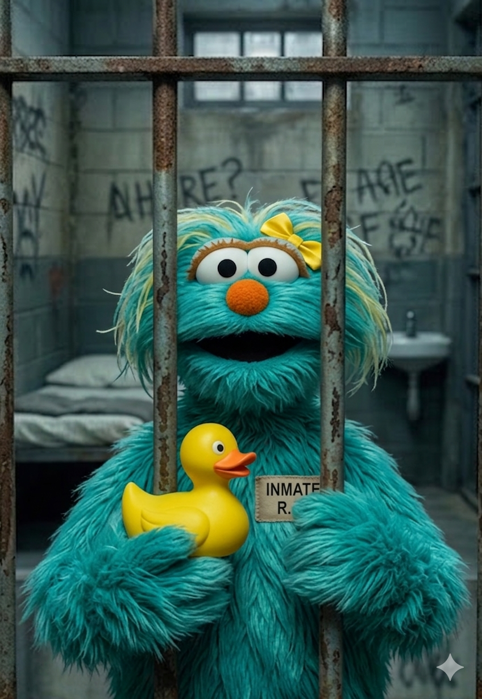

Presentación del Producto · 2026
LUPET
Plataforma comunitaria para localizar mascotas perdidas de forma rápida y centralizada con ayuda de similutud de imagenes.


Plataforma comunitaria para localizar mascotas perdidas de forma rápida y centralizada con ayuda de similutud de imagenes.
Ficha General
| Elemento | Respuesta |
|---|---|
| Nombre del producto o servicio | LUPET |
| ¿Es nuevo o existente? | Nuevo Producto creado desde cero para el mercado peruano, sin versión previa publicada. |
| Tipo de oferta | Producto digital Servicio web Plataforma web comunitaria accesible desde navegador (mobile-first). |
| Cliente objetivo | Propietarios de mascotas que las han perdido, ciudadanos que encuentran animales extraviados en la vía pública y comunidades solidarias de vecinos o voluntarios. |
| Necesidad que satisface | Reunir a mascotas perdidas con sus dueños de manera rápida, centralizada y con apoyo tecnológico, reduciendo el tiempo y el esfuerzo del proceso de búsqueda. |
| Problema que resuelve | La búsqueda de mascotas perdidas está fragmentada en redes sociales, WhatsApp y carteles físicos. LUPET centraliza los reportes, aplica IA para reconocimiento visual y facilita la comunicación directa entre usuarios. |
| Competidores o alternativas | Grupos de Facebook Grupos de WhatsApp Carteles físicos Webs locales de avisos Instagram comunitario |
Nuestro Equipo

Nelida Aracely
Quispe Calatayud
Integrante

Ronaldo Eddson
Quispe Quispe
Integrante

Joaquin Alejandro
Reynoso Quilca
Integrante

Andre'e Alessandro
Chili Lima
Integrante
Organigrama del equipo
Diapositiva 01

LUPET es un producto digital / servicio diseñado para centralizar la búsqueda de mascotas perdidas en una sola plataforma, aprovechando inteligencia artificial, geolocalización y comunicación en tiempo real.

Cuando una mascota se pierde, los propietarios recurren a métodos fragmentados que retrasan el reencuentro y reducen las probabilidades de éxito.
Flujo: del problema a la solución con LUPET
Diapositiva 02

Personas con mascotas que necesitan encontrarlas de forma rápida y organizada cuando se pierden.

Personas que hallan animales extraviados en la vía pública y desean reportarlos para reunirlos con sus dueños.

Vecinos y voluntarios dispuestos a colaborar en la búsqueda y difusión de reportes.
Reportar mascotas perdidas o encontradas de forma centralizada
Identificar animales mediante similitud visual por IA
Comunicarse directamente con otros usuarios en tiempo real
Reducir el tiempo de búsqueda y aumentar el reencuentro
Mapa mental — Clientes & necesidades
Diapositiva 03

Localización de mascotas perdidas y reducción del tiempo de búsqueda. Este es el núcleo de valor que LUPET ofrece a cada usuario.

Plataforma con mapa interactivo, registro de mascotas, similitud visual por IA, chat en tiempo real y notificaciones automáticas.

Asistente IA conversacional, comunidades grupales temáticas, historial de casos resueltos y contacto urgente vía WhatsApp.
Pirámide de niveles del producto
Diapositiva 04

Para propietarios de mascotas y ciudadanos que encuentran animales en la vía pública que necesitan reportar, buscar o identificar mascotas perdidas, ofrecemos una plataforma web comunitaria con similitud visual mediante inteligencia artificial, geolocalización interactiva y comunicación directa entre usuarios, que permite reducir el tiempo de búsqueda y mejorar las probabilidades de reencuentro, a diferencia de publicaciones dispersas en redes sociales, grupos de WhatsApp o carteles físicos. Además, la plataforma genera ingresos mediante espacios de publicidad segmentada para veterinarias, tiendas de mascotas, servicios de grooming, alimentos para animales, aseguradoras y negocios relacionados con el cuidado animal, creando un ecosistema sostenible que beneficia tanto a los usuarios como a los anunciantes.
Canvas simplificado de propuesta de valor
Diapositiva 05
| Tipo | Aplicación en LUPET |
|---|---|
| Funcional | Mapa interactivo con reportes georreferenciados y dashboard comunitario de mascotas perdidas. |
| Tecnológica | Similitud visual mediante TensorFlow.js y MobileNetV2, comparación por embeddings y similitud coseno. |
| Experiencial | Interfaz responsive optimizada para móvil, flujo simple e integración con WhatsApp para contacto urgente. |
| Precio | Acceso completamente gratuito para todos los usuarios registrados. |
| Adicional | Asistente IA conversacional para orientación sobre mascotas y comunidades grupales temáticas. |

Matriz comparativa: LUPET vs. alternativas actuales
| Característica | LUPET | Facebook / Instagram | WhatsApp grupos | Carteles físicos | Webs locales |
|---|---|---|---|---|---|
| Centralización de reportes | ✔ | ✘ | ✘ | ✘ | ◑ |
| Reconocimiento visual por IA | ✔ | ✘ | ✘ | ✘ | ✘ |
| Mapa georreferenciado | ✔ | ✘ | ✘ | ✘ | ◑ |
| Chat directo entre usuarios | ✔ | ◑ | ✔ | ✘ | ✘ |
| Acceso gratuito | ✔ | ✔ | ✔ | ◑ | ◑ |
| Optimizado para móvil | ✔ | ✔ | ✔ | ✘ | ◑ |
| Asistente IA conversacional | ✔ | ✘ | ✘ | ✘ | ✘ |
✔ Disponible · ◑ Parcialmente · ✘ No disponible
Diapositiva 06
Prueba piloto con usuarios reales durante una semana, recogiendo comentarios estructurados sobre la experiencia.


Ciclo del proceso de validación cualitativa
Diapositiva 07

LUPET responde a una necesidad real y cotidiana: recuperar mascotas perdidas de forma más rápida y organizada. A diferencia de las alternativas actuales, centraliza los reportes en una sola plataforma, aplica inteligencia artificial para detectar coincidencias visuales y facilita la comunicación inmediata entre usuarios. Su enfoque comunitario, acceso gratuito y optimización para dispositivos móviles la convierten en una herramienta tecnológica accesible, funcional y con impacto social positivo.
Hoja de ruta del proyecto